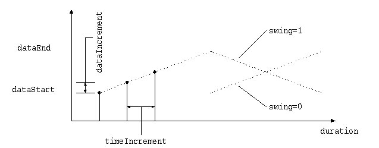

BasicIterator Actor
We recommend using the LoopActor instead of the BasicIterator.
The BasicIterator can send linearly progressive/regressive or random
data in messages to a message group at designated time interval. The following
image illustrate the output of the iterator with several controllable parameters:

To use the BasicIterator implementation, load basicIterator.so
and create an actor of type BasicIterator.
BasicIterator Actor messages
In addition to the messages understood by all actors, the BasicIterator
understands the following messages:
-
SetMessageGroup hActor name
-
Assign a message group to send the ticks to. The argument name
is a string.
-
SetTimeIncrement hActor timeIncr
-
Set the duration of the clock tick. The argument timeIncr has
a range of [-1e+09, 1e+09] and defaults to 0. It has an optional trailing
time argument (in seconds).
-
SetDataIncrement hActor dataIncr
-
This gets sent to the message group as an argument. The argument dataIncr
has a range of [-1e+09, 1e+09] and defaults to 0. It has an optional trailing
time argument (in seconds).
-
SetDataStart hActor dataStart
-
Starting value of the data. If random data is to be sent, dataStart
indicates the lower bound of random number generation. The argument dataStart
has a range of [-1e+09, 1e+09] and defaults to 0.
-
SetDataEnd hActor dataEnd
-
Terminal value of data, causing the iterator to end. If random data is
to be sent, dataEnd indicates the upper bound of random number
generation. The argument dataEnd has a range of [-1e+09, 1e+09]
and defaults to 0.
-
SetData hActor dataValue
-
Set the data value immediately. The argument dataValue has a range
of [-1e+09, 1e+09] and defaults to 0.
-
SetDuration hActor timeEnd
-
Time's-up value. Iterator stops when the clock gets this far. The argument
timeEnd
has a range of [-1e+09, 1e+09] and defaults to 0.
-
SetIterationLimit hActor iterationLimit
-
Iterator stops after this many iterations. The argument iterationLimit
has a range of [-1000000000, 1000000000] and defaults to 0.
-
EnableDataEnd hActor enableDataEnd
-
Enable or disable iterator-ending because of data value. The argument enableDataEnd
takes logical value as 0 or 1 and defaults to 0.
-
EnableDurationEnd hActor enableDurationEnd
-
Enable or disable iterator-ending because time's up. The argument enableDurationEnd
takes logical value as 0 or 1 and defaults to 0.
-
EnableIterationLimit hActor enableIterationLimit
-
(Guess). The argument enableIterationLimit takes logical value
as 0 or 1 and defaults to 0.
-
SetLoop hActor numloops
-
-1 = forever, 0 = never, 1 = once, x = x times. The argument numloops
has a range of [-1, 1000000000] and defaults to 1.
-
SetSwing hActor enableSwing
-
If true, swing back and forth instead of jumping back to the start. The
argument enableSwing takes logical value as 0 or 1 and defaults
to 0.
-
SetRandom hActor enableRandom
-
Enable or disable random number generation. The argument enableRandom
takes logical value as 0 or 1 and defaults to 0. If true, data to be sent
out will be random numbers lies in the range set by SetDataStart and SetDataEnd.
Iterator will not end because of data value even if EnableDataEnd is true
because it doesn't make sense.
-
SetSeed hActor seed
-
Set seed for random number generator, specifically, drand48().
Using the same seed will generate exactly the same random sequence.